Monday, illustrated
Every screen below was driven by scripts/walk_runbook.py
against a sandbox — signed in as the person the step belongs to, clicking the
controls a person clicks. Nothing here is a mock-up, and nothing was
photographed from the live record: the walk seals and computes, so it is
refused a working instance.
Getting in
The door. Everything below is behind somebody's own account.
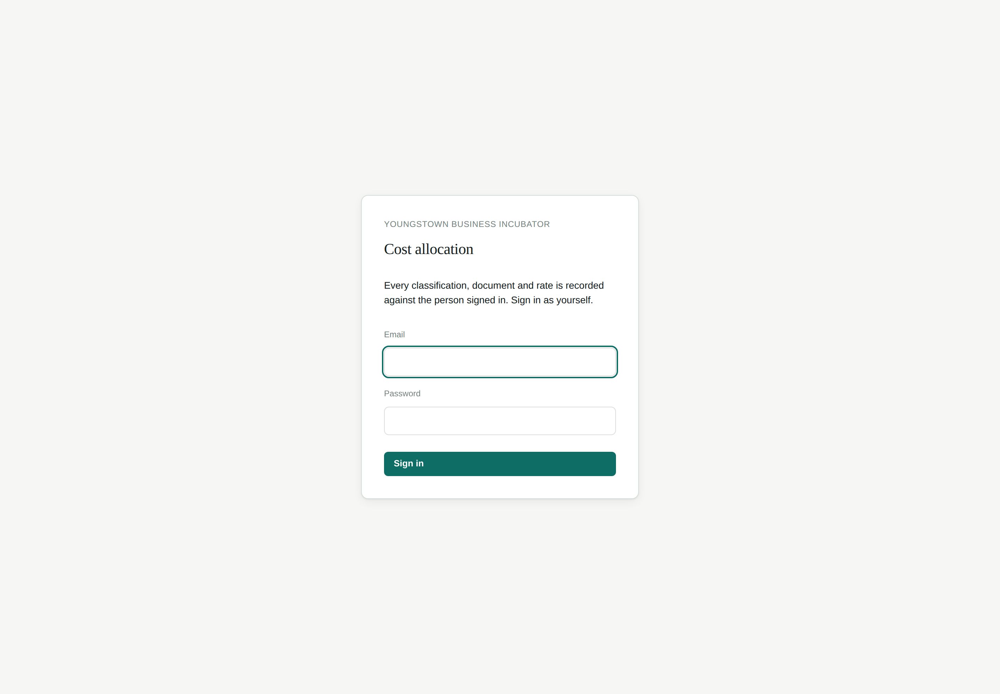
What you hold, and what is yours to do today.
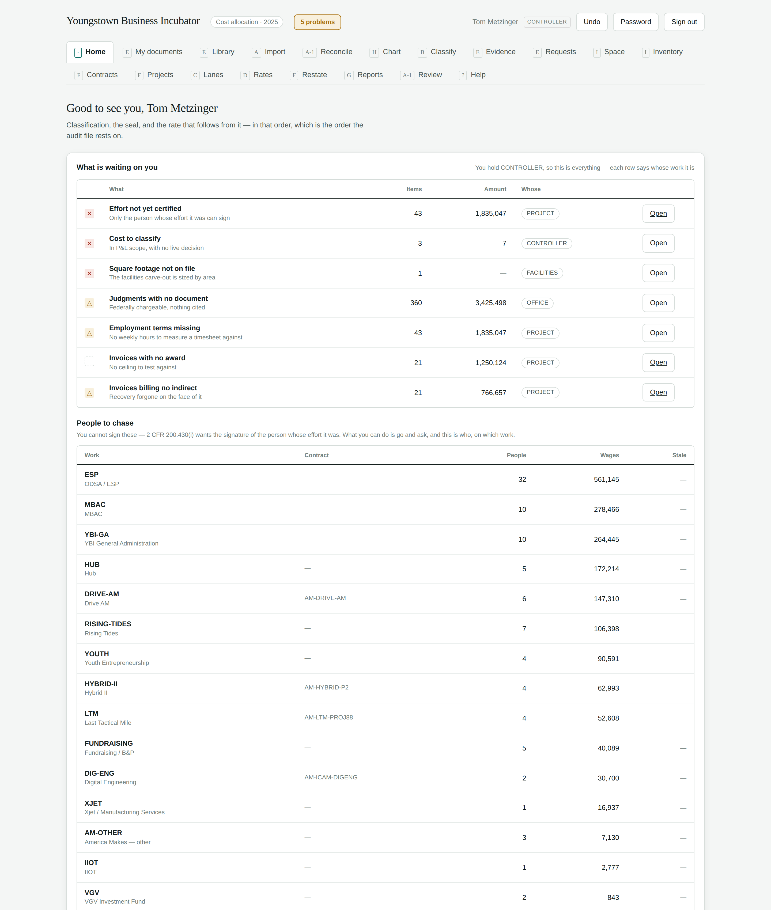
Reconcile
Schedule A-1 — the eleven points where the ledger, the P&L, the balance sheet and the payroll register have to agree. This is the gate: a rate is refused while any of them is open.
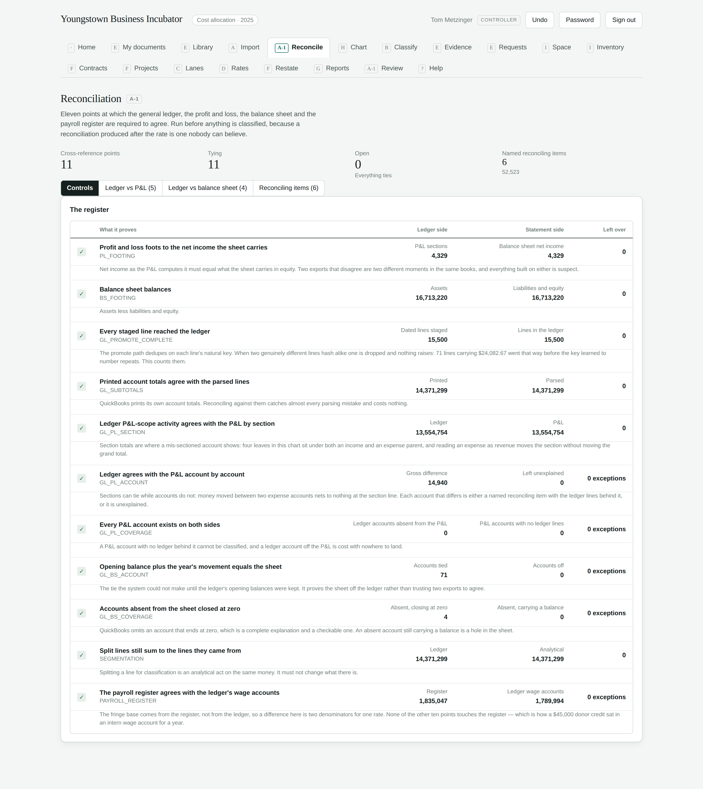
POST /api/rates/compute answers 409 while any of them is open, so nothing downstream can start here. Read state, never a variance of zero: both sides of most controls are
COALESCE(..., 0), so an empty period compares zero against zero and looks green. A control that cannot be evaluated has not passed. The eleventh is the payroll register, and it is the one that pays for itself — it is how a $45,053 donor credit sitting in an intern wage account for a year was found, which moved the fringe rate from 22.45% to 21.90%.
Review
The queue, in Sweep. Every group carries its recommendation; nothing has been accepted on anybody's behalf.
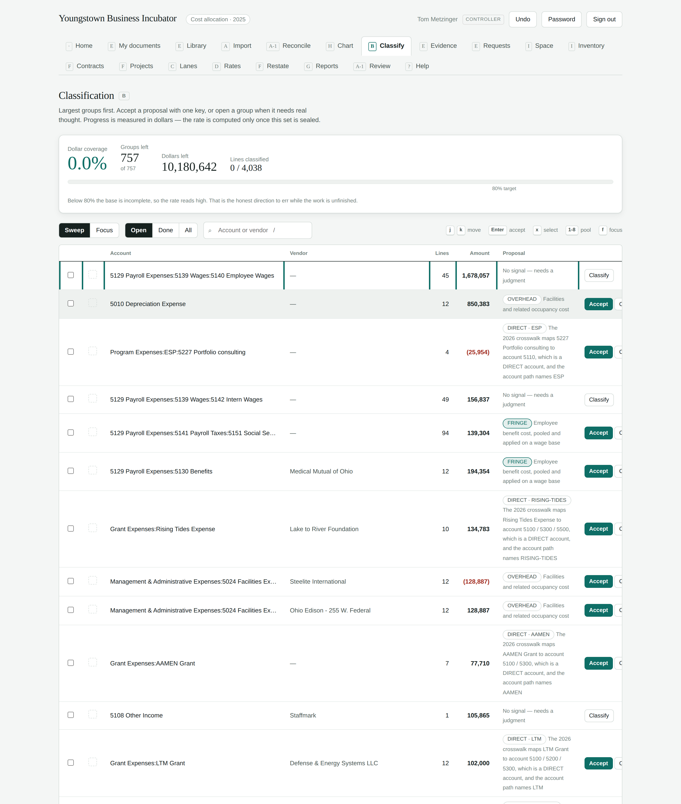
docs/CLASSIFICATION_LOG.md) gives a reasoned treatment for every one, with a citation and a rationale — and a named reason where there is none. Sweep is the dense mode for the many groups with an obvious answer.
j/k move, Enter accepts the proposal, 1–8 jump to a pool. Every second saved compounds across two hundred meaningful decisions.Focus — one group at a time, the amount set large, the proposal as a single button. This is where the judgments that need thought are made.
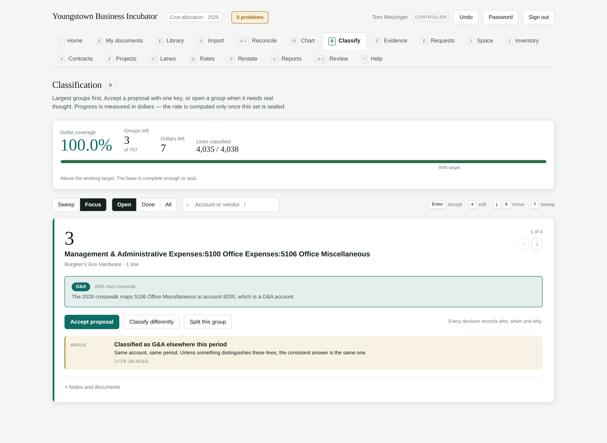
f — for the few that need real thought. One group, the amount set large, sample memos for context, and the proposal as a single button. Note what is not here: no rate, no preview of what this judgment would do to the rate. That absence is the guarantee. A reviewer will ask whether the rate was honest or reverse-engineered, and the answer has to be documentary rather than a promise.
Seal
Before sealing. Coverage and the reconciliation gate are both shown, and no rate exists — that is the guarantee, not a gap.
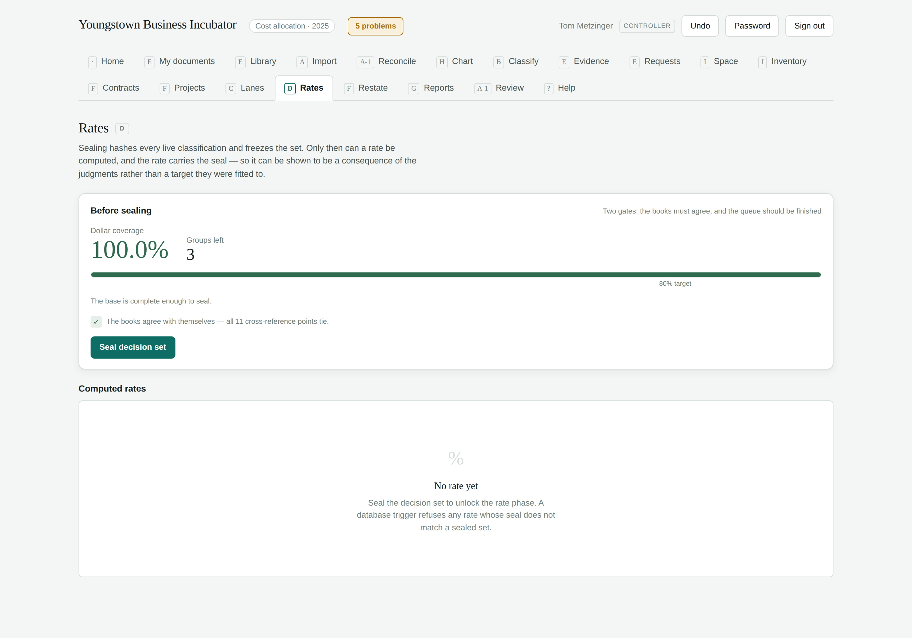
No rate exists yet. That is the design, not a gap.
Sealed. The hash covers every live judgment in the set. Only now does computing become possible.
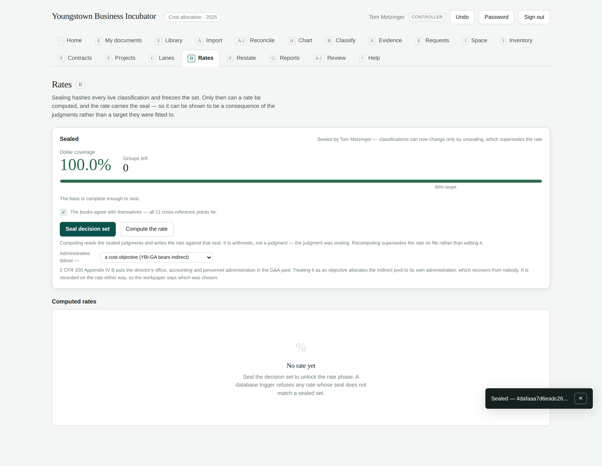
Afterwards a classification can only change by unsealing with a written reason, which supersedes any rate already computed. The card now reads from the record — it said “Before sealing” over a sealed set until this walk photographed it.
Compute
Computed. The basis for administrative labour is chosen on the screen rather than defaulted silently — it is worth about nine points of combined rate on the same judgments — and it is recorded on the rate. A trigger refuses any rate whose seal does not match a sealed set.
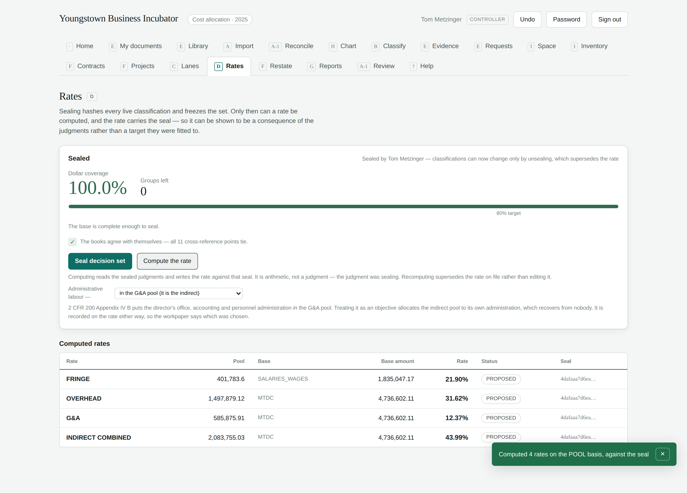
POST /api/rates/compute was complete on the server, named in a comment on this very screen, and called by nothing in the application — so the one figure the whole engagement produces could only be made by running a script. The basis for administrative labour is chosen here rather than defaulted silently. It is worth about nine points of combined rate on the same judgments and it is recorded on the rate, so the workpaper says which was chosen. The first version of this button sent an empty body and computed 34.82% — the default, correctly, and not the basis this engagement settled on.
Every rate carries the seal hash. A database trigger refuses one whose seal does not match a sealed set.
Check
The build-up an auditor reads. Nothing on it is computed — every figure is read from the row it was recorded in.
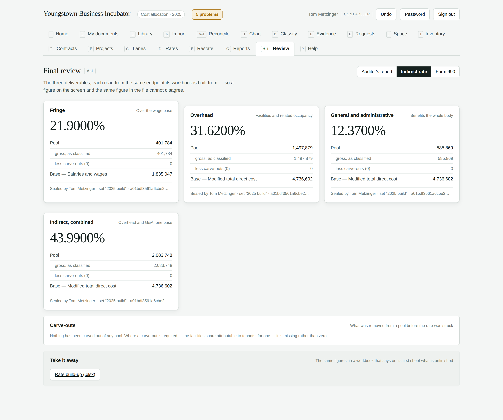
Read
pool_variance and the four anchor rows. And read what it says above the figures: the rate is a working figure while anything is unfinished, and no 200.465 facilities carve-out is in it, because no facility on the record carries measured space.In parallel
The pre-filled sheet, offered as a convenience. It says it is optional before it says anything else, and names the three complete answers. Nothing here has been adopted for anybody.
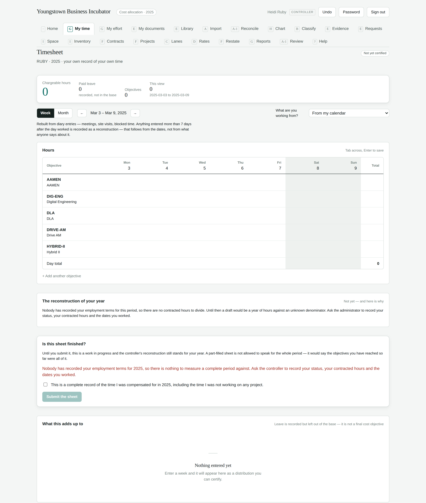
It says this is optional before it says anything else, and names three complete answers: type your own days and ignore it, adopt it and correct what is wrong, or leave it. A convenience that reads as an instruction is the one way this exercise produces forty-three signatures worth nothing.
2 CFR 200.430(i) does not require a contemporaneous record — it requires one that reflects the work performed, supported and reviewed after the fact. A reconstruction the person reads, corrects and signs meets that. One nobody ever saw does not, which is where 2025 has been sitting.
Certifying is a separate act on a separate screen, and only the person whose effort it was can perform it.
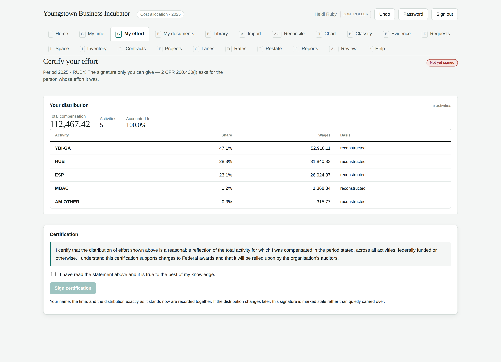
Nobody signs for anybody else. A project manager cannot sign on their team's behalf —
v_certification_chase is a list to go and ask, never an action.What is outstanding, routed to the portfolio that can act on it.

Anybody holding a portfolio can recommend an item to somebody else with a reason — and that raises work, never a number.
The register, and what it restates to
The income half. A charge code, who may charge it, the contract it works under, and the invoices issued against it. The register held three invoices from one month until the year arrived; it holds 61 now, reconciled to the ledger's grant income.
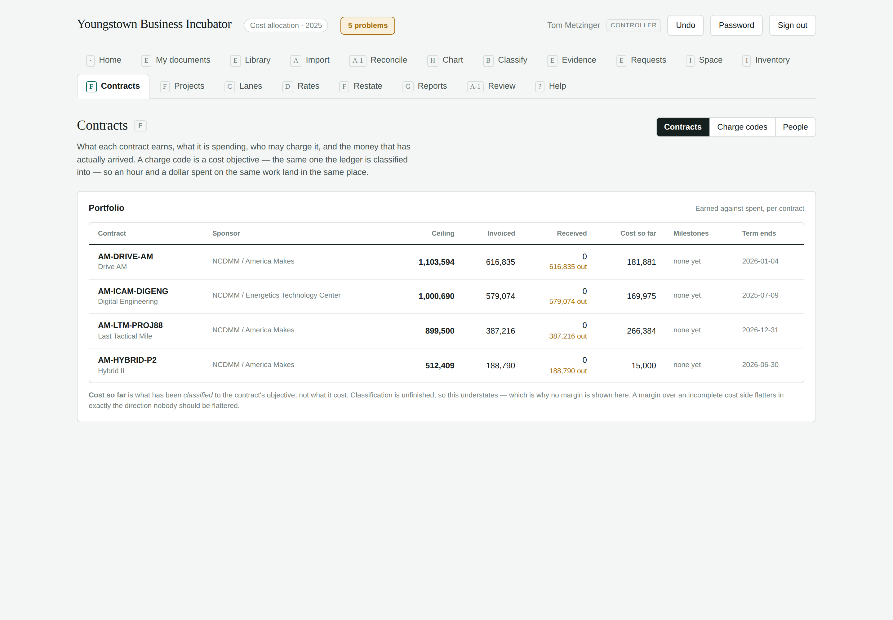
The restatement. The position is the REBUILD against the cost record — labour taken down to wages plus fringe before indirect goes on — and the invoice-only reading is kept beside it, labelled, because it is what every document written before today quotes. Everything is PROPOSED until a sponsor says otherwise in writing.
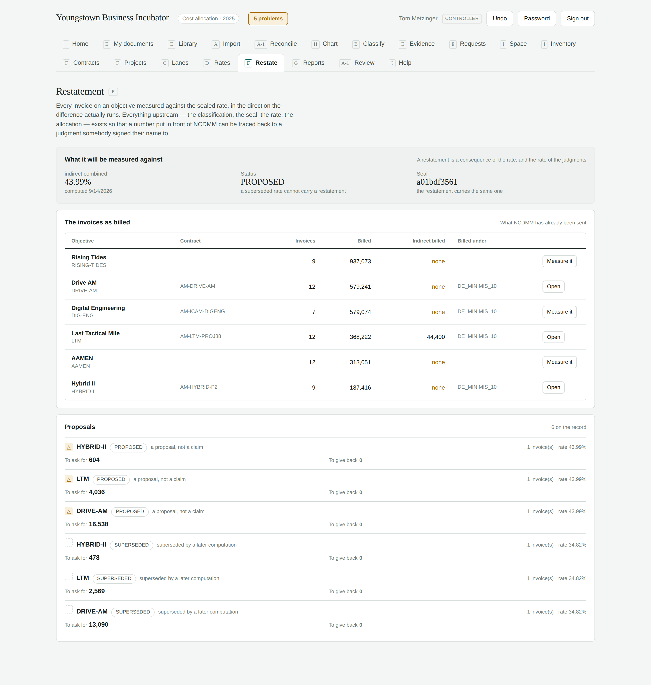
The same record as the auditor sees it. Reading the cost record is one permission and they hold it by rank; they hold no portfolio and can change nothing.
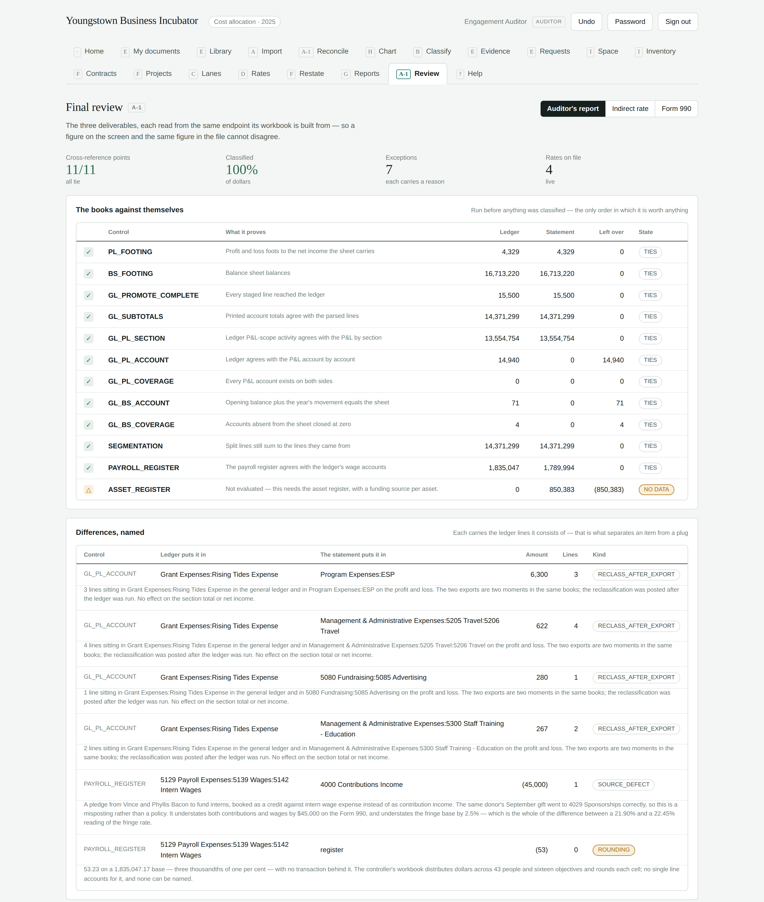